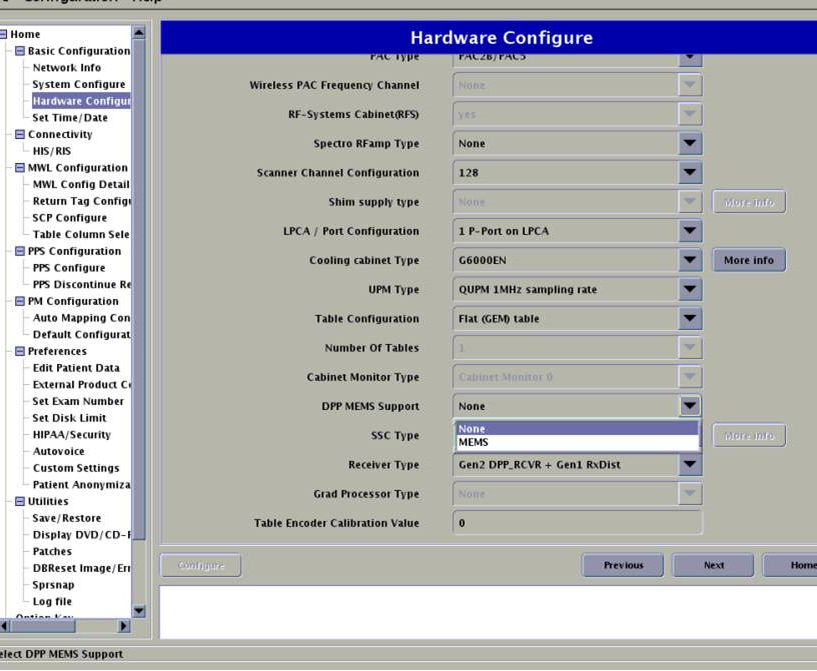

- 00000018WIA300A8230GYZ
- id_156676194.4
- Oct 18, 2021 3:04:15 AM
Guided Install Options
Under [System Configure]
Date Format Enter the date format used by the customer
Weight Unit Select Pounds or Kilograms
Keyboard Select keyboard used by the customer
Language Select language used by the customer
Video Card Not used for nVidia_Quadro_FX_560
Display type Enter the video monitor used for the system
Enable HO Shim Set to No (High Order Shim is not available for Signa Pioneer)
Legacy Image Type Set to Yes
Scan Range (micro-meter) Long or short; select Short if there is not enough room for the cable overhang between the rear ped and the customer wall
Under [Hardware Configure]
Field Strength Set to 3.0T for Signa Pioneer
Package Name Set to SSSD for Signa Pioneer
Gradient type Set to 5550(SSSD)
Resonance Module Set to VRMW
Magnet Serial Number Enter actual magnet serial number; first two letters are UA
Table Limit Default; cannot change
Line Frequency Set to either 50 or 60 Hz
RF Amp Type Set to Dual drive for Signa Pioneer
Governing Body Select proper governing body for the customer site; usually IEC (or other selection if required by local regulation)
ISO Vector Z Set to 3.0T 70cm magnet enclosure
Magnet Enclosure Set to wide open (tight fit) Signa Pioneer
PAC type Select the proper PAC
RF Systems Cabinet (RFS) Select Yes
Spectro RF Amp type Select None if site does not have the spectroscopy option, or AMT if site does have spectroscopy option
Scanner channel configuration Set to 32 (Signa Pioneer systems is 32 channel)
LPCA configuration type Select 3 P-Ports + PA-Port
Table configuration Select Flat table
SSC Type Select ICE
(For PX25.0) Receiver Type Select DPP_RCVR
(For PX26.1 and later) Receiver Type Select Gen1 DPP_RCVR or Gen2 DPP_RCVR.
Table Encoder Calibration Value Input the value to displayed the encoder label
